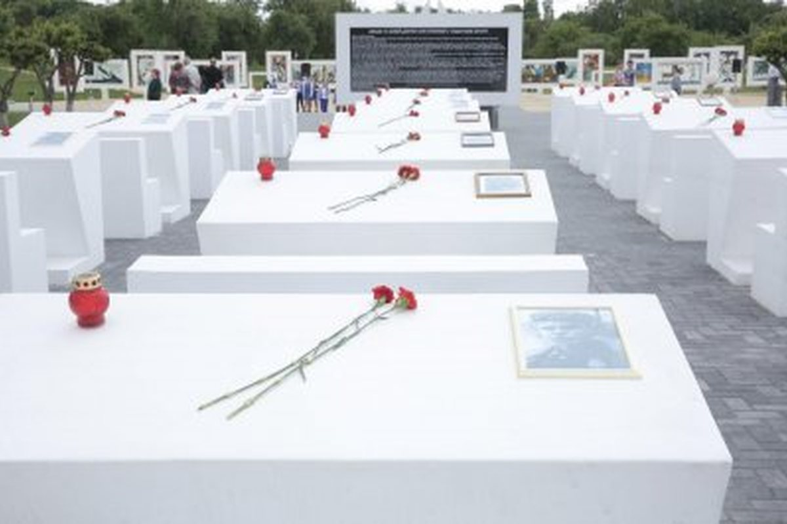

Мемарыял у Жлобінскім раёне, прысвечаны дзецям, якія пацярпелі ад нацысцкай палітыкі. Тут жа працуе музей «Дзецям вайны».
Красны Бераг у Жлобінскім раёне — месца памяці дзяцей, якія пацярпелі ад нацысцкай палітыкі. У гады вайны тут дзейнічаў зборна-перасыльны лагер, праз які дзяцей вывозілі на прымусовыя работы ў Германію.
Мемарыяльны комплекс «Дзецям — ахвярам вайны» адкрыты 28 чэрвеня 2007 года. Яго аўтар — архітэктар Леанід Мендэлевіч Левін, заслужаны архітэктар Рэспублікі Беларусь.
Кампазіцыя задумана як «Горад Сонца»: ад цэнтральнай «Плошчы Сонца» разыходзяцца прамяні-алеі, а чорны «Прамень Памяці» вядзе да ўваходу. У цэнтры — фігура дзяўчынкі, якая сімвалізуе дзяцей, пазбаўленых дзяцінства.
Пры мемарыяле працуе музей «Дзецям вайны». Яго экспазіцыя расказвае пра даваеннае дзяцінства, акупацыю, партызанскі рух, лагер у Красным Беразе і дзяцей-остарбайтараў.
